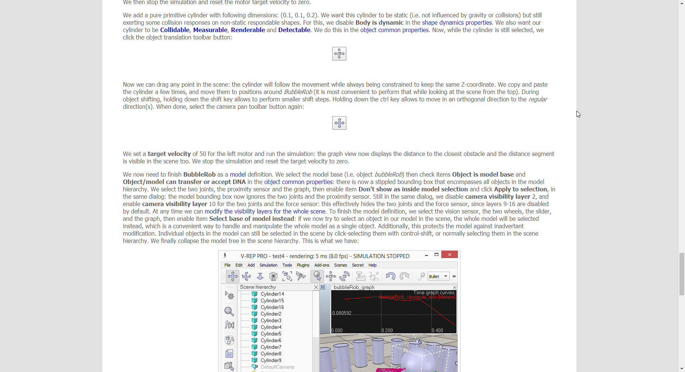

Onshape_Football_Table 模型檔連結
Football Table Onshape module Youtube
Onshape_Football_Table_module_01
Onshape_Football_Table_module_02
Onshape_Football_Table_module_03
Onshape_Football_Table_module_04
V-rep BubbleRob Tutorial.
BubbleRob_Tutorial：www.coppeliarobotics.com/helpFiles/en/bubbleRobTutorial.htm
最末三段作業出現問題。BubbleRob 無法利用感測器的回傳直做運動條件改變

出問題段落位置，問題解決中
利用 ssh 對 git 改版, 必須使用 home/.ssh/config 設定, 才能透過 proxy 伺服器進行連線, 由於在 IPv6 環境下, 必須要透過 proxy 才能對 Git 連線, 因此若無 config, 無法對遠端改版
ProxyCommand y:/PortableGit/mingw64/bin/connect.exe -H 140.130.17.53:3128 %h %p Host github.com User git Port 22 Hostname github.com IdentityFile "y:\home\.ssh\id_rsa" TCPKeepAlive yes IdentitiesOnly yes Host ssh.github.com User git Port 443 Hostname ssh.github.com IdentityFile "y:\home\.ssh\id_rsa" TCPKeepAlive yes IdentitiesOnly yes